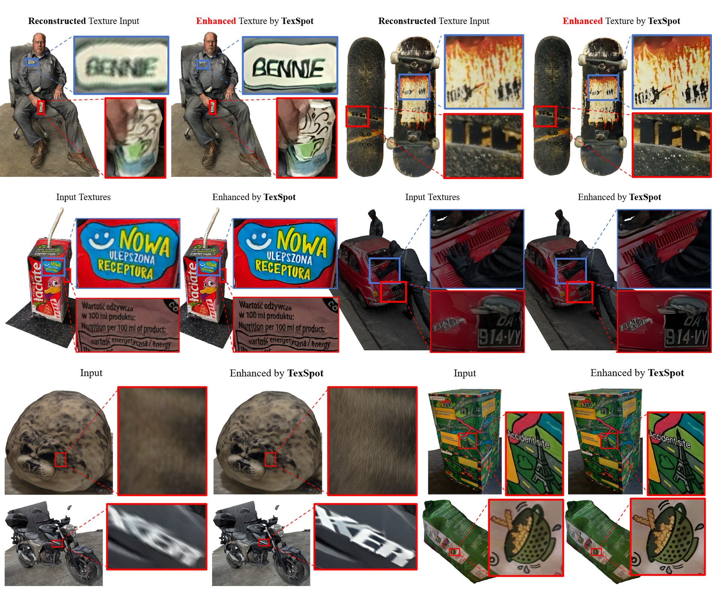
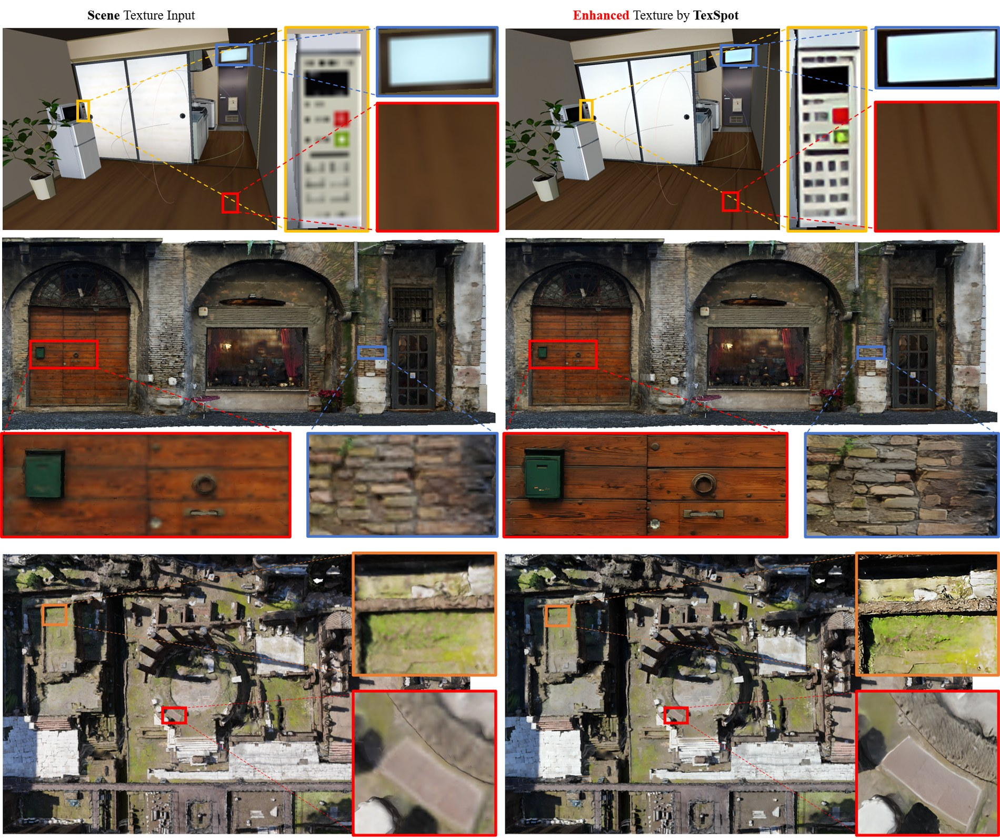
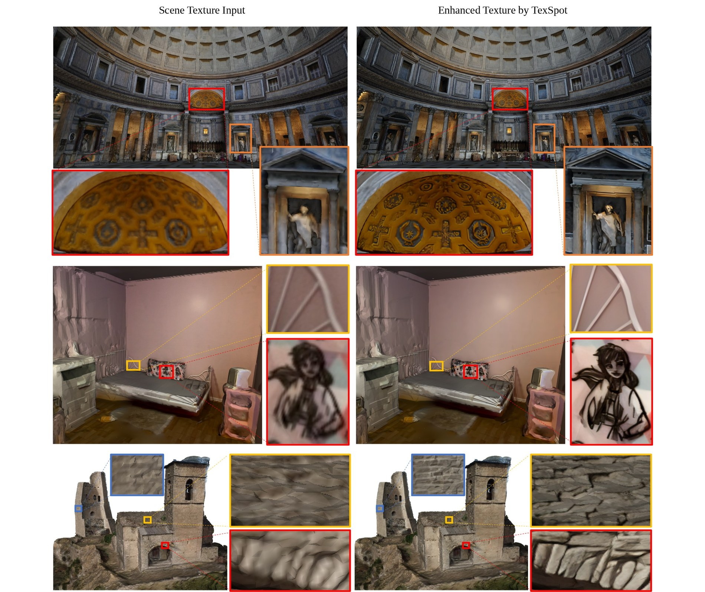
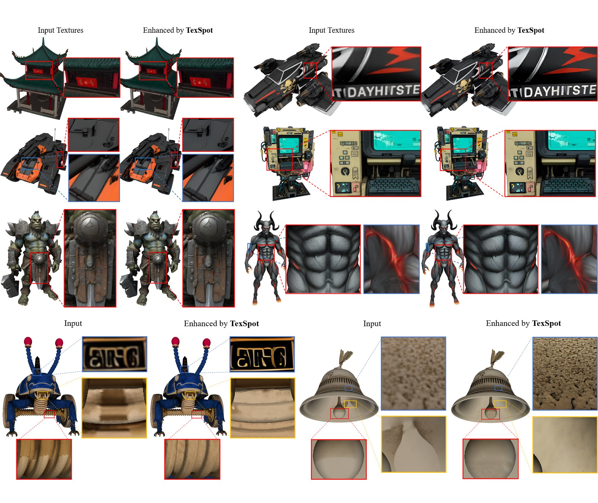
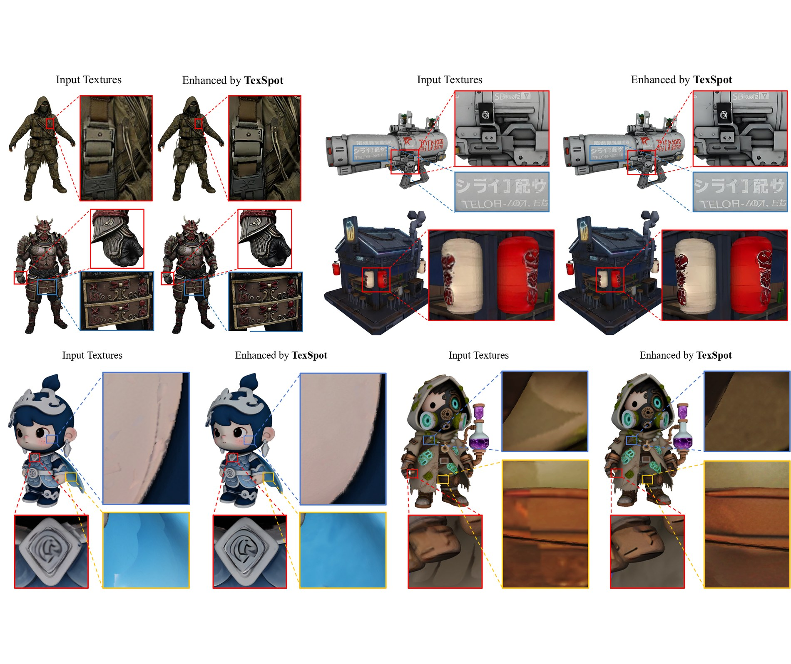
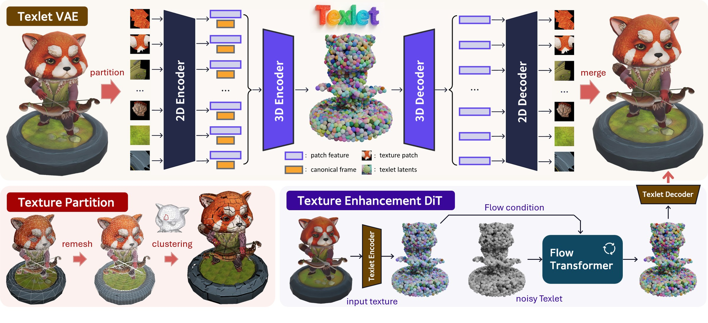

Abstract
High-quality 3D texture generation remains a fundamental challenge due to the view-inconsistency inherent in current mainstream multi-view diffusion pipelines. Existing representations either rely on UV maps, which suffer from distortion during unwrapping, or point-based methods, which tightly couple texture fidelity to geometric density that limits high-resolution texture generation. To address these limitations, we introduce TexSpot, a diffusion-based texture enhancement framework. At its core is Texlet, a novel 3D texture representation that merges the geometric expressiveness of point-based 3D textures with the compactness of UV-based representation. Each Texlet latent vector encodes a local texture patch via a 2D encoder and is further aggregated using a 3D encoder to incorporate global shape context. A cascaded 3D-to-2D decoder reconstructs high-quality texture patches, enabling the Texlet space learning. Leveraging this representation, we train a diffusion transformer conditioned on Texlets to refine and enhance textures produced by multi-view diffusion methods. Extensive experiments demonstrate that TexSpot significantly improves visual fidelity, geometric consistency, and robustness over existing state-of-the-art 3D texture generation and enhancement approaches.

In-the-wild texture enhancement on reconstructed objects with blurry, low-quality textures.

In-the-wild texture enhancement on indoor and outdoor scenes.

More texture enhancement results on large-scale reconstructed scenes.

In-the-wild texture enhancement on textured 3D assets generated by commercial models.

Texture enhancement on multi-view diffusion results. TexSpot improves mild or local artifacts while significantly enhancing local texture fidelity.
Video Presentation
Methodology

TexSpot Pipeline: The pipeline overview of TexSpot. It consists of (i) a texture patch partitioning that divides the surface texture into spatially-uniform small patches; (ii) a TexSpot VAE with a two-stage local-global architecture that represents all texture patches into a compact 3D latent space; and (iii) a conditional TexSpot DiT based on flow matching for texture enhancement.
BibTeX
@inproceedings{lu2026texspot,
title = {TexSpot: 3D Texture Enhancement with Spatially-uniform Point Latent Representation},
author = {Lu, Ziteng and Wu, Yushuang and Ye, Chongjie and Qiu, Yuda and Shao, Jing and Guo, Xiaoyang and Zhou, Jiaqing and Hu, Tianlei and Zhou, Kun and Han, Xiaoguang},
booktitle = {SIGGRAPH Asia 2026 Conference Papers (SA Conference Papers '26)},
year = {2026},
location = {Kuala Lumpur, Malaysia},
publisher = {Association for Computing Machinery},
address = {New York, NY, USA},
isbn = {979-8-4007-2842-6},
doi = {10.1145/3829340.3842181},
url = {https://doi.org/10.1145/3829340.3842181}
}